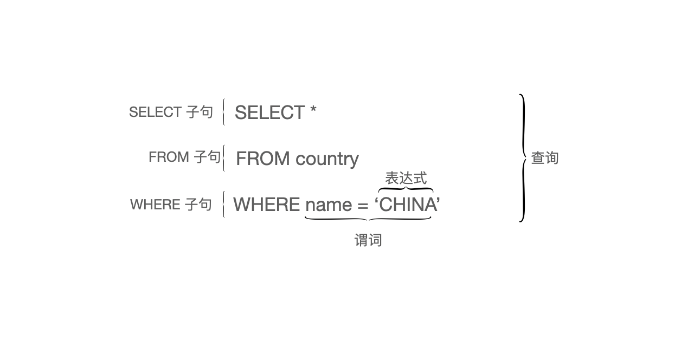
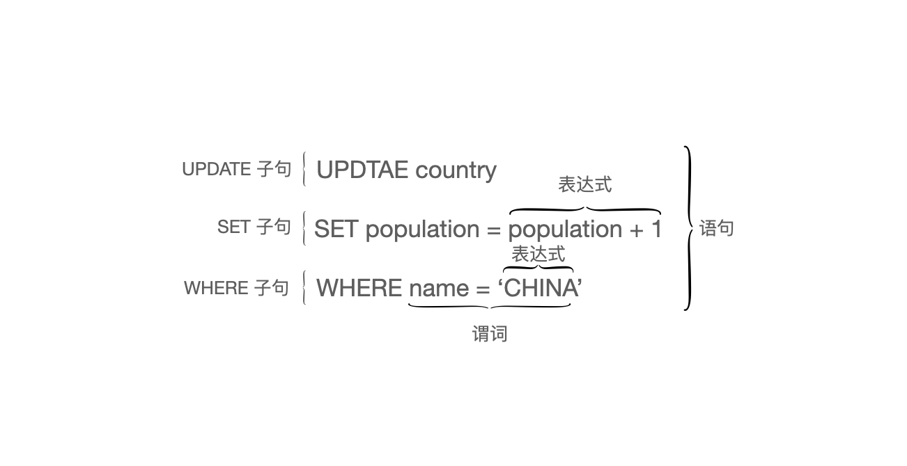

SQL是什么
SQL 的全称是结构查询语言，这是第一个实现了关系模型的语言。是一种特定领域语言，如果你想开发一个软件，仅仅依靠 SQL 是无法完成的，它只能用于数据的查询和统计。与之相反，C 语言等就被称之为通用语言。
SQL 是关系模型的实现，在被 Oracle，MySQL 等各大关系型数据库所采用，但 SQL 不仅仅在关系型数据库中使用的很广泛，在大数据领域中也有很大的使用空间，Spark、Flink 等前沿的计算框架也都提供了 SQL 接口。
1. SQL结构
SQL 语言本身可以分成 DDL、DCL、DML等类型，每一类都有不同功能。
在 SQL 中有大量的操作符可以使用，而且为了更方便的查询和统计数据，SQL 中还内置了很多函数。
无论是上面三种类型的哪一种，都是由基础的元素构成，最基础的元素有三种：
- 子句（Clauses)：每一个SQL 都可以分解成一个个子句
- 表达式（Expressions)：可以产生任何标量值
- 谓词（Predicates)：产生一个三值逻辑值（true/false/unknow）或者布尔值。
还有另外两种元素是由上面的部分组成的。
- 查询（Queries）：基于特定的条件检索数据
- 语句（Statements）：可以持久化地影响数据和数据结构
也就是说，执行中的 SQL，要么是查询，要么就是语句。
以 SQL 中的 SELECT 查询为例：

以 SQL 中的 UPDATE 语句为例：

这里介绍的是 SQL 的标准语法，在不同数据库中的实现有所不同。
DDL
DDL 全称是 data definition language，用于定义数据结构。
因为如果要能使用 SQL，就要求数据是结构化的。结构化就是指数据的数据结构，有哪些字段，字段是哪种类型，都需要提前定义好。
通俗来说，就是用来创建数据，创建表，修改表结构等等。
CREATE TABLE book(
id bigint(20) primary key auto_increment,
name varchar(50),
author VARCHAR(50),
content varchar(50)
);
DCL
每个数据库系统中都会涉及到权限和安全，DCL 就是用来维护系统访问权限，全称是 data control language。
GRANT SELECT, UPDATE
ON book
TO user1;
DML
DML 是日常使用最频繁的一类，全称是 data manipulation language。
对数据表的增删改查都是属于这一类。
SELECT *
FROM Book
WHERE price > 100.00
ORDER BY title;
INSERT INTO book
(name, author, content)
VALUES
('围城', '钱钟书', '城里的人想出来，墙外的人想进去');
操作符
SQL 中还提供了很多逻辑操作符操作符，这些逻辑操作符会和表达式组合形成一个谓词，用来过滤数据。
- =
- <>
- <
- ≥
- ≤
- between
- like
- in & not in
- is null & is not null
- is true & is not true
- is false & is not false
- is not distinct from (两个值相等或者都为空)
- as
内置函数
在数据查询统计的需求中，通常会涉及到对数据的汇总和统计，SQL 中提供了很多内置的函数来帮助完成这个过程。
比如时间类的函数：
- DAY
- MONTH
- WEEKDAY
- YEAR
- ...
字符串函数：
- LOWER
- UPPER
- ...
聚合函数：
- COUNT
- AVG
- MAX
- MIN
- ...
2. SQL标准
SQL 起源于 1970 年的一篇论文[5]，然后由 IBM 实现了这篇关系模型的论文，这就是 SQL 的前身，然后自家产品不断推出相关的产品。
Oracle 看到了 SQL 的潜力，也加入竞争，经历了一段时间的野蛮生长之后，这两家公司共同促进了 SQL 的标准化。
在 1986 年，SQL 成为了 ANSI 的标准，一年之后也成为了 ISO 的标准。
目前最新的 SQL 标准是 SQL-2016，SQL-2019 的标准正在制定中。
SQL 的标准号是通过年份来决定的，历史上的各个 SQL 标准如下：
- 1986 SQL-86
- 1989 SQL-89
- 1992 SQL-92
- 1999 SQL:1999
- 2003 SQL:2003
- 2006 SQL:2006
- 2008 SQL:2008
- 2011 SQL:2011
- 2016 SQL:2016
- 2019 SQL:2019（正在制定中）
需要注意的是，SQL 标准与实际使用的 SQL 还是有很大区别的，比如在不同的数据库中，对 SQL 的实现不完全相同。
也就是说，很有可能 SQL 标准中的某个特性在具体的数据库中不能使用，比如在 MySQL 中，就抛弃了很多功能，但不妨碍它受欢迎。就像网络的七层协议一样，最后的实现也并不是完整按照这七层协议来，而是选择最实用的方式来实现。
文 / Rayjun
REF
[1] https://en.wikipedia.org/wiki/SQL
[2] https://en.wikipedia.org/wiki/SQL_syntax
[3] https://en.wikipedia.org/wiki/Domain-specific_language